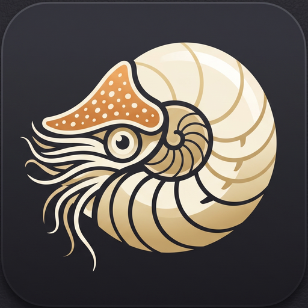

Algor
Monitoreo de sensores y personalización del Corsair Nautilus LCD Cap, para Linux. Proyecto independiente, sin afiliación con Corsair.
Algor
Sensor monitoring and customization for the Corsair Nautilus LCD Cap, on Linux. Independent project, not affiliated with Corsair.

Funciones y alcanceFeatures and scope
Sensores en vivo
Temperatura y carga de CPU, telemetría GPU y sensores disponibles en Linux.
Live sensors
CPU temperature and load, GPU telemetry and all available Linux sensors.
Panel personalizable
Medidores reordenables arrastrando con el mouse; el orden se recuerda entre sesiones.
Customizable panel
General Panel gauges can be reordered by dragging; the layout is remembered across sessions.
Pantalla LCD
Temperatura/carga, imágenes, GIF, color, brillo y rotación — con memoria propia guardada en el LCD.
LCD screen
Temperature/load display, images, GIF, color, brightness and rotation — saved to LCD onboard memory.
Alertas
Temperatura, pérdida de lecturas, RPM bajas/recuperación y errores LCD, con historial y notificaciones nativas.
Alerts
Temperature, reading loss, low RPM/recovery and LCD errors, with history and native notifications.
Asistente de identificación
Identifica bomba y ventiladores canal por canal para habilitar alertas RPM con confianza.
Identification wizard
Identifies pump and fans channel by channel so you can enable RPM alerts with confidence.
Registro y exportación
Exportación CSV, preferencias e historial de eventos persistentes.
Logging and export
CSV export, persistent preferences and event history.
Capturas de pantallaScreenshots


CompatibilidadCompatibility
- Placa probada
- Tested board
- Gigabyte X99 UD5
- CPU probada
- Tested CPU
- Xeon E5-2680 v4
- SO probado
- Tested OS
- Debian 13
- LCD
1b1c:0c57— Corsair Nautilus LCD Cap
La prueba de retirada total de alimentación USB y la validación física completa del asistente RPM siguen pendientes. Otros modelos de LCD no están admitidos por el transporte actual.
Consultá la matriz y guía de pruebas para reportar tu propio equipo.
Full USB power-removal testing and complete physical validation of the RPM wizard are still pending. Other LCD models are not supported by the current transport layer.
See the compatibility matrix and testing guide to report your own hardware.
Instalación desde el código fuenteInstalling from source
Requisitos: Linux de escritorio, Python 3.10–3.13, entorno virtual, libusb y bibliotecas Qt.
Requirements: Linux desktop, Python 3.10–3.13, virtual environment, libusb and Qt libraries.
sudo apt update
sudo apt install python3-venv libusb-1.0-0 libegl1 libopengl0 libxcb-cursor0
python3 -m venv .venv
.venv/bin/python -m pip install -r requirements.txt
.venv/bin/python main.pyGuía completa, acceso USB al LCD y desinstalación en el README del repositorio.
Full guide, USB access for the LCD and uninstalling in the repository README.